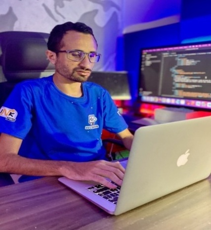
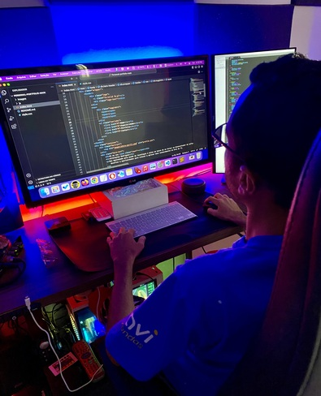
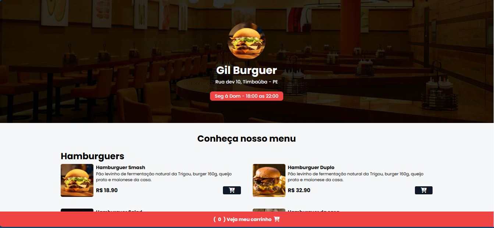
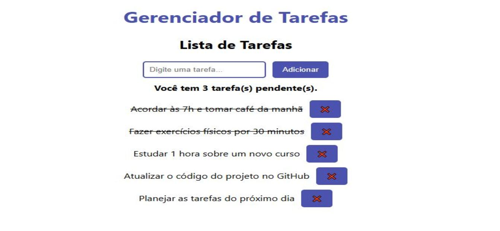
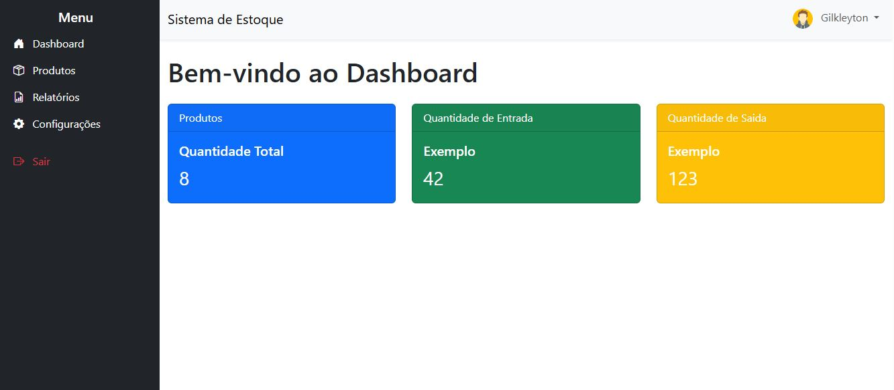
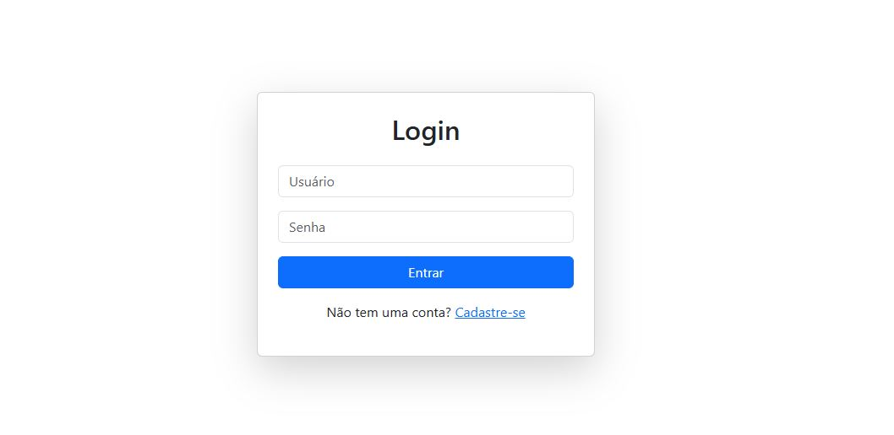

CONSTRUINDO O DIGITAL A PARTIR DE IDEIAS.
Criatividade e inovação são aliadas indispensáveis. Com uma abordagem singular que integra design impactante, funcionalidade intuitiva e otimização para resultados, estou preparado para dar vida à presença online dos seus sonhos.


MUITO PRAZER, SOU GILKLEYTON RODRIGUES.
Sou apaixonado pelo mundo da tecnologia e estou em busca de se tornar um desenvolvedor de software Fullstack. Com minhas habilidades front-end e conhecimento em back-end, sou um profissional que busca constantemente a melhoria e o progresso, valorizando ainda mais meu perfil profissional. Sempre em busca de novos desafios e oportunidades para crescer e aplicar meus conhecimentos na área de TI.
Meus PROJETOS.
Landing Page advocacia
App-cardapio
App-to-do-list
Projeto-Controle-estoque
Login-system
Minhas HABILIDADES.
- HTML
- CSS
- JavaScript
- React
- Bootstrap
- Git/Github
- Tailwind CSS
- PHP
- MySQL
- Nodejs
- Firebase